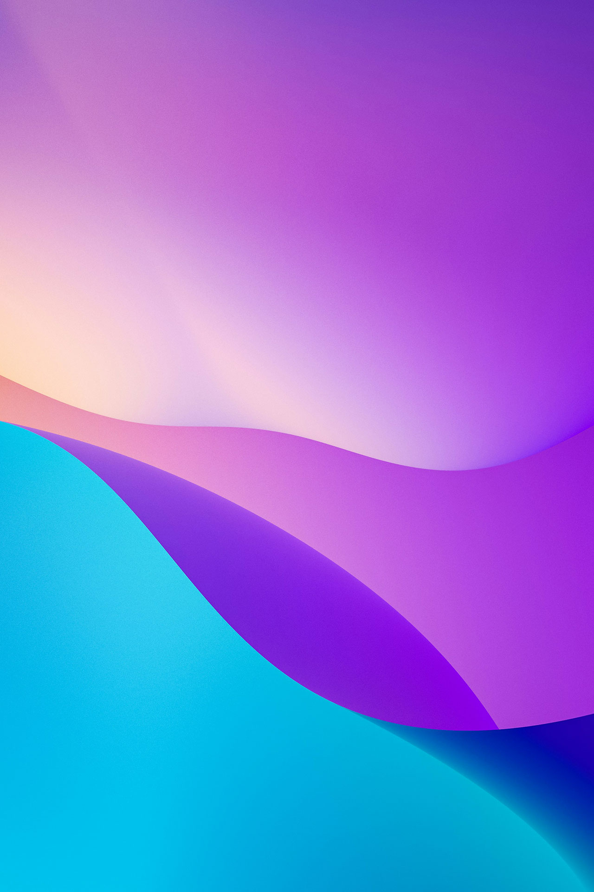
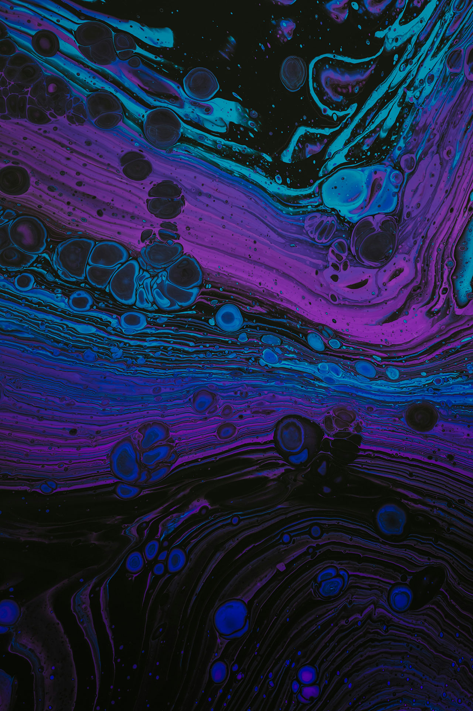

Ul/UX design is crucial for user satisfaction as it ensures the application is intuitive, easy-to-navigate, and accessible, ultimately leading to a higher user retention rate and positive user experience.
Good Ul/UX design enhances a brand's perception by ensuring a consistent and visually appealing interface, which in turn, builds trust and credibility with its users.
Well-designed Ul/UX helps in improving the overall usability of the application, making it easier for users to complete tasks efficiently and effectively, thus contributing to higher conversion rates.
